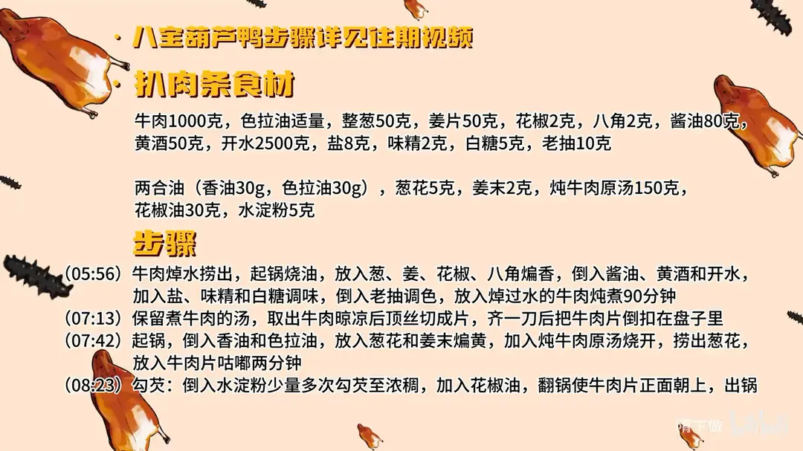

扒肉条
隋卞一做。牛肉 1000 克焯水后与葱姜、花椒、八角、80 克酱油和 2500 克开水同炖 90 分钟，晾凉顶丝切片倒扣盘中；再用香油、色拉油两合油煸香葱姜，加 150 克原汤咕嘟两分钟，水淀粉勾芡翻锅，肉条正面朝上。
原视频：https://www.bilibili.com/video/BV1Dy411v77v
食材
牛肉、色拉油、整葱 等 20 样
| 类别 | 用料 | 用量 |
|---|---|---|
| 主料 | 牛肉 | 1000 克 |
| 炖煮 | 色拉油 | 适量 |
| 炖煮 | 整葱 | 50 克 |
| 炖煮 | 姜片 | 50 克 |
| 炖煮 | 花椒 | 2 克 |
| 炖煮 | 八角 | 2 克 |
| 炖煮 | 酱油 | 80 克 |
| 炖煮 | 黄酒 | 50 克 |
| 炖煮 | 开水 | 2500 克 |
| 炖煮 | 盐 | 8 克 |
| 炖煮 | 味精 | 2 克 |
| 炖煮 | 白糖 | 5 克 |
| 炖煮 | 老抽 | 10 克 |
| 两合油 | 香油 | 30 克 |
| 两合油 | 色拉油 | 30 克 |
| 扒制 | 葱花 | 5 克 |
| 扒制 | 姜末 | 2 克 |
| 扒制 | 炖牛肉原汤 | 150 克 |
| 扒制 | 花椒油 | 30 克 |
| 扒制 | 水淀粉 | 5 克 |
步骤
- 炖牛肉：牛肉焯水捞出。起锅烧油，放入葱、姜、花椒、八角煸香，倒入酱油、黄酒和开水，加入盐、味精和白糖调味，倒入老抽调色，放入焯过水的牛肉炖煮 90 分钟。
- 切片装盘：保留煮牛肉的汤，取出牛肉晾凉后顶丝切成片，齐一刀后把牛肉片倒扣在盘子里。
- 扒制：起锅，倒入香油和色拉油，放入葱花和姜末煸黄，加入炖牛肉原汤烧开，捞出葱花，放入牛肉片咕嘟两分钟。
- 勾芡出锅：倒入水淀粉少量多次勾芡至浓稠，加入花椒油，翻锅使牛肉片正面朝上，出锅。
讲解要点
难度：★★★☆☆（炖、切、扒三步都在意形，难点是勾芡和翻锅定形）
为什么这么做
- 选牛肋条：这块有筋、有肉、有油，炖完软滑鲜香；视频里法餐那份被点评「肉选得太瘦、纤维多」，正好说明选料是这道菜的第一关。
- 酱油要下锅炝一下：酱油直接倒进汤里只有咸味，在热锅里炝过才出酱香，汤的底味才厚。
- 香料先煸香再添汤：葱姜、花椒、八角在油里煸出香味，味道才溶进汤和肉里，比直接扔进水里煮香得多。
- 开水下锅、小火炖一个半小时：开水不让肉骤缩变柴；小火保持汤面微开，肉酥烂而形不散，后面才切得成片。
- 晾凉、顶丝切、齐一刀倒扣：热的时候肉软易碎，晾凉后纤维收紧，逆着纹理切才不塞牙；切好的片对齐再翻面倒扣，扒出来才正面朝上、整齐好看。
- 两合油（香油＋色拉油）：纯香油香但腻口，掺色拉油提香不压味；葱花姜末煸黄后捞出，只取香气、不留苦味。
- 咕嘟两分钟、芡分次勾、最后花椒油＋翻锅：肉片在汤里靠一会儿把味吸进去；芡稀了挂不住、稠了糊嘴，所以少量多次；翻锅让正面朝上，这就是「扒」的成形动作。
容易翻车
- 牛肉不焯水、血水没去净，汤浑、腥味重。
- 顺丝切而没顶丝，肉片嚼不动，还容易散。
- 炖过头肉太烂，一切就碎，扒不成条。
- 葱花煸糊或没捞干净，成菜带苦味、发黑。
- 芡一次倒太多会结块、糊底；翻锅没翻好，肉条正面朝下，卖相全无。
原片尾卡

原片文案
AI 字幕校准稿
做菜就做菜。你把我带到人生地不熟的地方来干嘛？今天有点不一样，打算给你上点强度。前两天小李给我发私信，说您特别的膨胀。正好前段时间我在巴黎尝到了两道顶级的法国菜，所以我特别想知道，这两道食材如果咱们用中式的做法做出来，大概会是什么样。今天我是带着任务来给您下挑战，你敢不敢接受？开干。
第一道菜叫法式油封鸭。在中世纪的法国，当时没有很好的冷藏技术，通过这种油封的技术，不光可以延长肉类的保质期，而且能够软化肉质当中的纤维，让肉质变得更加酥软。腌的时候也适当放点盐，不光加盐，还要加各种腌料。那我就拿一个不是很复杂的鸭子，一道菜特别适合我这种新手小白。这是一道中国的传统名菜，据史书记载，乾隆下江南也吃过一道菜——八宝葫芦鸭。
鸭子准备好，整鸭去骨，在脖子上下刀，然后把食管气管都揪出来，找出翅膀的关节，用小刀慢慢把鸭肉剔下来。不是您说这道菜特别简单吗？简单，这不简单吗？就是把骨头跟肉分离开。你看这地方就很薄，还不能破——就是说咱们要把所有的骨头剔出来之后，还要保持鸭子的完整性。所以中餐跟西餐多少有一些不太一样的地方：这原料不一定很贵，但是一定要把它做出来以后看着很贵的样子。
去骨之后灌上水，不漏就行了，这一步就是告诉你皮没破。里边加上料酒去去鸭子的腥味，再加点酱油入一个底味，腌着就行。起锅烧油，把焯过水的鲍鱼、海参、蹄筋、香菇、瑶柱，加上马蹄一锅放，香味出来了。放入糯米，炒匀了就扒拉出来晾凉。
接下来给鸭子造一个葫芦形，里边就可以填馅了，大约 50% 左右的饱满度就行。在三分之一处系一下，焯水是为了定型。整个鸭子现在像葫芦一样。把它放到盘里边，把表面的水拿纸蘸一下，抹上酱油上色。起锅烧油，把油往这鸭子上面浇，剩下的油倒里边就行了。鸭子让它炸着，这边把炖鸭子的汤调一下，把炸好的鸭子放到调好的汤里边，搁锅里煮一下，然后上锅蒸 90 分钟。
看表面已经上色了，这样就差不多了，好饭不怕晚，蒸 90 分钟。葫芦鸭是真出来了，前后真的像葫芦，然后把签子、线绳都要绞掉。
第二道菜也是一道法国名菜，叫做勃艮第红酒烩牛肉。这道菜虽然是个炖菜，但也很考验厨师的功底。那我就做一个清真名菜——扒肉条，酥烂咸鲜，肥而不腻，入口即化。
这道菜需要炖煮。把准备好的牛肉焯水，咱们用的是牛肋那部分，有筋有肉有油，软滑鲜香。做一个煮牛肉的汤：葱姜、花椒跟八角煸香，里边倒入酱油——酱油一定要搁锅里炝一下出香味，然后加点黄酒、开水，盐少许、味精少许、白糖，糖可以多一点，调点色，把焯过水的牛肉搁里边煮。烧开之后关小火，炖煮一个半小时。
牛肉到时间了，取出来之后稍微晾一晾，原汤不能倒，一会儿还要用。顶丝切成大片，有富余的可以炫我嘴里。哎呦，老嫩，特别多汁，这一个半小时没白等。切好之后齐一刀，做出来就更漂亮一些，然后把它翻过来放到盘里边。
起锅烧油，香油——这是个关键点，这个叫两合油，还要放点色拉油。香油太多了吃着稍微有点腻口，咱们就增加一个香味。葱花姜末煸黄了之后，加入炖牛肉的原汤烧开，定一下味，里边的葱花出了味之后再把它打出来。把切好的牛肉条放进去，搁锅里稍微靠一会儿，就是让每一片牛肉都把汤汁的味道吸进去，咕嘟两分钟就行。
开始勾芡，芡勾得粘稠一点，然后加入花椒油，单手颠锅。所以刚刚那一步为什么要倒过来？这就要扒。
这个法式油封鸭用的是鸭腿肉，味道腌得挺透的，有感觉到那种腊肉的感觉吗？有点那意思，但是腊肉会经过日晒，有一点点发酵或者有一点烟熏，这个就是纯纯的盐跟肉的作用腌透了。法国巴黎的油封鸭吃起来口感会更温润一些，这个口感稍微有点硬，中间的纤维感很足，说明也有可能是油封的时间不够。
这道菜到底是吃皮还是吃馅？皮呢，咱们只是基本的一个简单的炖制，靠里边馅料来提香。这里的糯米巨香，回味的时候能尝到那种八宝馅料非常复杂的多层次的口味，跟油封鸭腿是两个风味。
这个像是那种半甜型的红酒炖的，感觉放了不少糖，但是牛肉确实入味了，真入味。不过这个肉感觉选得有点太瘦了，没有脂肪，多少纤维。这边也太多汁了，从牛肉买回来到制作出来其实也就两个小时，怎么做得这么入味？首先得选那个部位特别好，一定是牛肋这块，所以这道菜很重要的一个点在于一定要选好材料。咱们也不用像法餐那么复杂，非得腌制 20 小时，俩小时也能干到同样的效果。中餐有中餐的玩法，法餐有法国人自己的浪漫，同样的食材，我们是用不同的技法做出不一样的味道。